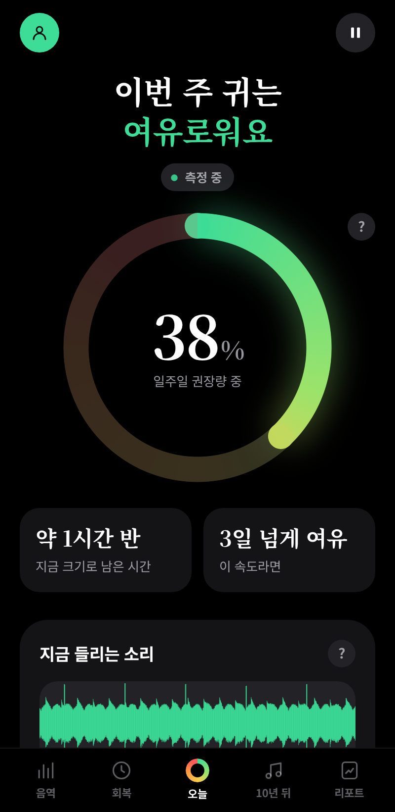

이어폰으로 듣는 습관을, 한눈에 돌아보다.
SafeEar는 PC와 Mac에서 이어폰·헤드폰으로 들은 소리가 얼마나 쌓였는지 보여 주는 앱이에요. 최근 7일 동안 쓴 양을 % 하나로 보여 주고, 쉬는 시간에 따른 변화와 10년 뒤의 소리도 들려줘요.
소리는 녹음하지 않아요. 기기 안에서 1초마다 숫자로 바꾼 뒤 바로 버려요.

SafeEar는 의료기기가 아니에요. 난청을 진단하거나 치료하지 않아요.
SafeEar
SafeEar is a listening monitor for PC and Mac. It shows how much sound you have taken in through earphones and headphones over the last 7 days, how that changes with rest, and what your habits could sound like in 10 years.
Sound is never recorded. It is turned into numbers on your device every second and then discarded. SafeEar is not a medical device.